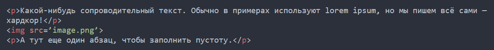
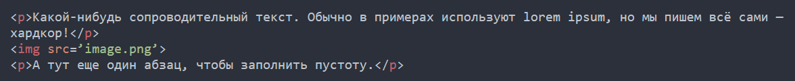
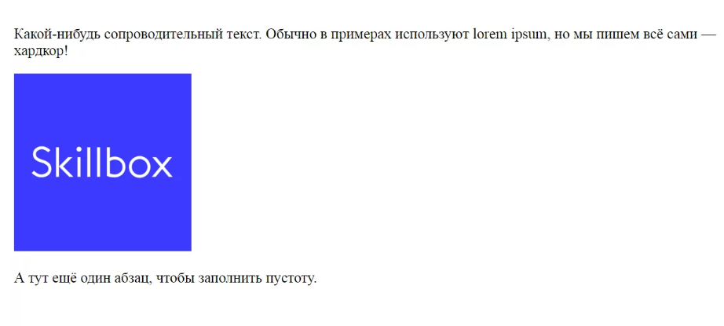

Возможности HTML
Язык состоит из тегов — это своеобразные команды, которые преобразовываются в визуальные объекты в браузере пользователя. Например, тег  используется для размещения изображений на странице. У него есть обязательный атрибут src, в котором указывается ссылка на файл.
Вот как будет выглядеть код:

используется для размещения изображений на странице. У него есть обязательный атрибут src, в котором указывается ссылка на файл.
Вот как будет выглядеть код:

А вот как этот код выглядит в браузере:

Еще вы могли заметить тег p. Он используется для создания абзацев. Этот тег парный, то есть на конце абзаца должен стоять закрывающий /p. Парные теги применяются для разметки блоков:
- контейнеров;
- абзацев;
- заголовков;
- списков;
- таблиц и т.д.
Что нельзя сделать на HTML
Простыми словами, HTML — это каркас сайта. В нем могут быть прописаны:
- ссылки;
- таблицы;
- изображения;
- формы;
- абзацы;
- блоки и т.д.
Также есть ограниченные возможности по изменению внешнего вида:
- поменять цвет;
- указать фоновое изображение;
- изменить шрифт;
- сделать текст жирным, курсивным, подчеркнутым, зачеркнутым и т.д.;
На данный момент выпущено пять версий языка. Первая версия была разработана между 1986 и 1991 годами, а последняя (5.2) — в 2017. Изначально он должен был стать независимым от каких-либо платформ — отображаться везде одинаково. Но этого не случилось, потому что у пользователей росли требования к мультимедиа.
Как итог, код интерпретируется по-разному не только на разных устройствах, но и в разных браузерах. Это не плохо, потому что требования отличаются: пользователь, заходящий на сайт с телефона, готов к ограниченному функционалу и минималистичному дизайну, а владелец ПК зачастую хочет большего.
В пятой редакции HTML стал чуть независимее от других языков. Раньше проверка правильного заполнения форм была исключительно на JS, а теперь часть задач можно переложить на HTML.
Например, можно указать тип данных, которые должны вводиться в поле. Если пользователь попробует ввести что-то не то, у него не получится. Сами же поля стали более дружелюбными: пользователь может выбрать дату, время и даже цвет, может указать число из интервала, корректный адрес электронной почты или ссылку на сайте.
Появился встроенный плеер — теперь не нужно подключать Adobe Flash Player или другие плагины. Визуальная часть перетаскивания элементов теперь реализуется на HTML и CSS, если добавить атрибут draggable.